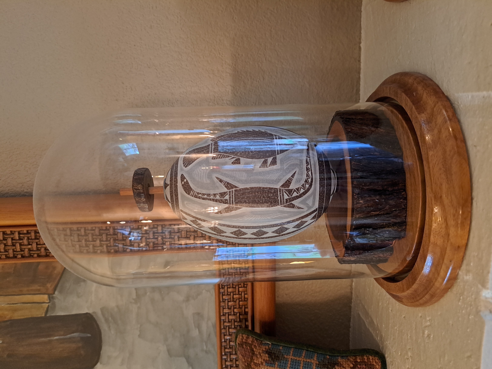
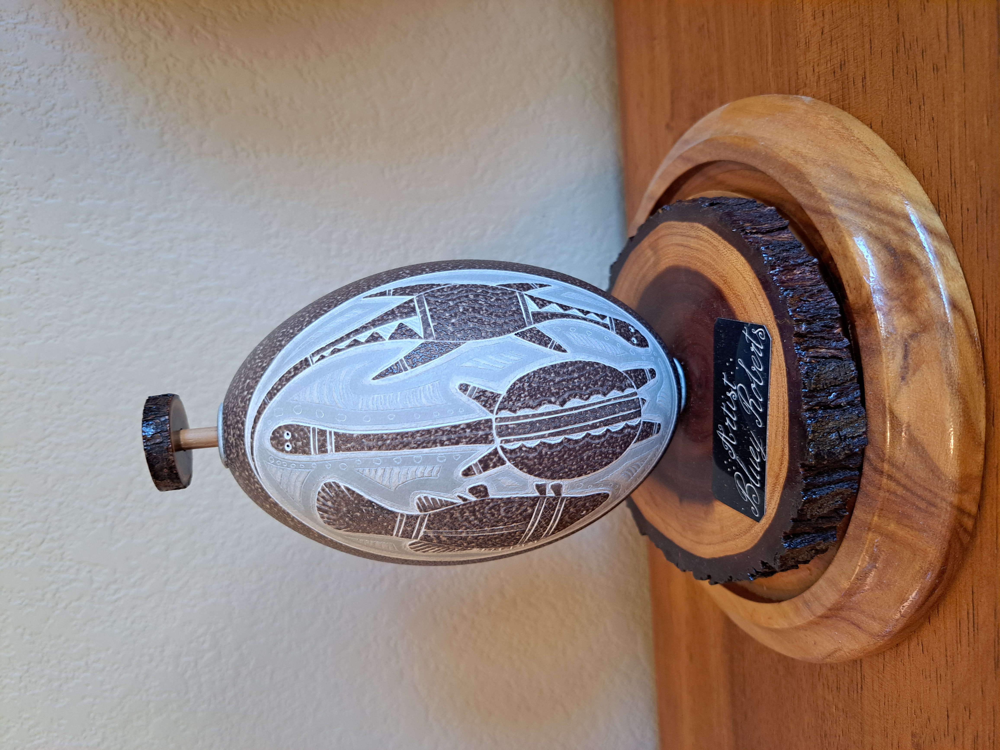
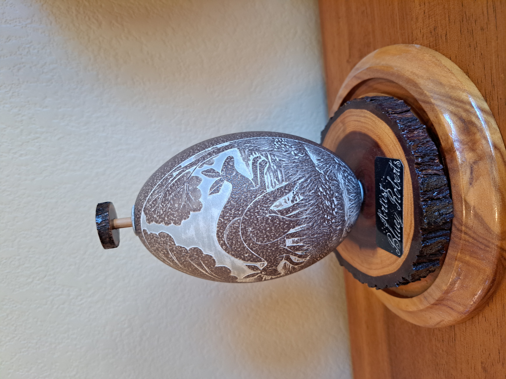
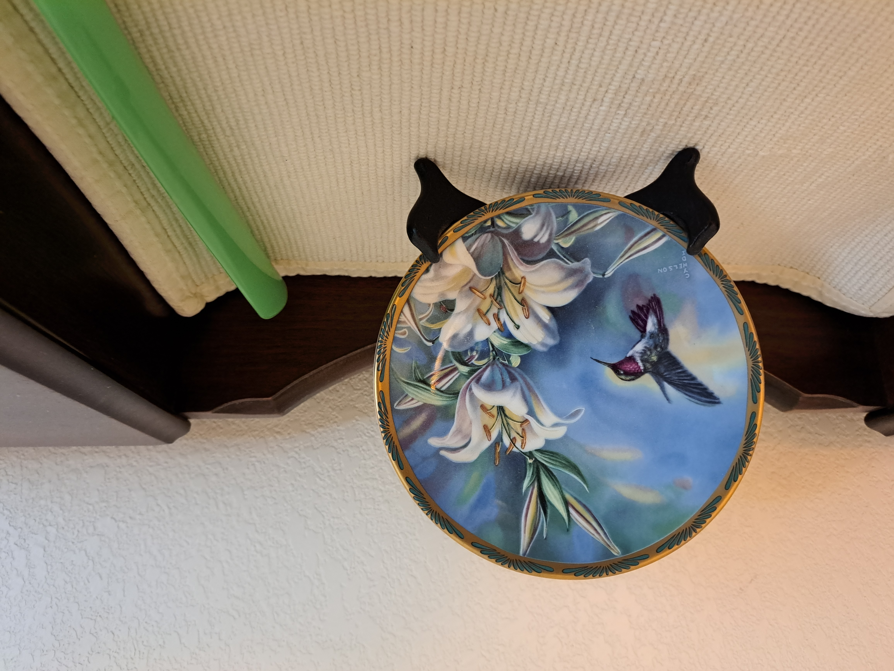
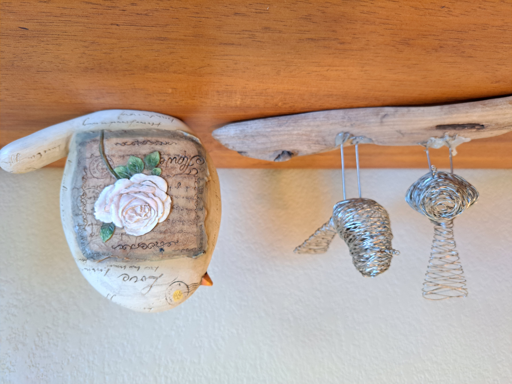

Sandy's Homepage
 Fig. : 1991 Honda Civic.
Fig. : 1991 Honda Civic.
 Fig. : Portrait of Rose.
Fig. : Portrait of Rose.

Fig. : Native Australian Egg.
 Fig. : Native Australian Egg 2.
Fig. : Native Australian Egg 2.

Fig. : Native Australian Egg.
 Fig. : Native Australian Egg.
Fig. : Native Australian Egg.

Fig. 4: Native Australian Egg.
 Fig. 5: Woven balloons.
Fig. 5: Woven balloons.

Fig. 6: Bird Plate.
 Fig. 7: Birds Stick.
Fig. 7: Birds Stick.

Fig. 8: Birds.
 Fig. 9: Ancient embroidery of wisdom.
Fig. 9: Ancient embroidery of wisdom.
 Fig. 10: A variety of family embroidery.
Fig. 10: A variety of family embroidery.
 Fig. 11: Woodchest.
Fig. 11: Woodchest.
This might be the wiskey bottle that mom found in Georgia. A bottle from the depression era that still had whiskey, and mom saved some for dad.